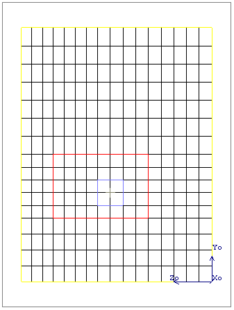

The
grid defines the sizes of the solved cells and, therefore, the accuracy
of the model.
Procedure
- Press R
to refit the project on the drawing board, press W to display the
cuboids as wireframes and then press G to display the grid.
The grid is created by the
geometry boundaries alone (that is, the keypoint grid). This will
not be sufficient to achieve an accurate solution, so more grid must
be added. There are a number of methods available, but for this
example we will use a pre-set system grid.
- Select
System > System Grid from the data tree to display the System Grid
property sheet, then click Fine.
Results
The grid display updates to that
shown in Figure 1. The program has defined positions
for the minimum and maximum cell sizes using a smoothing algorithm.
Figure 1. Result
of Applying a “Fine” Grid